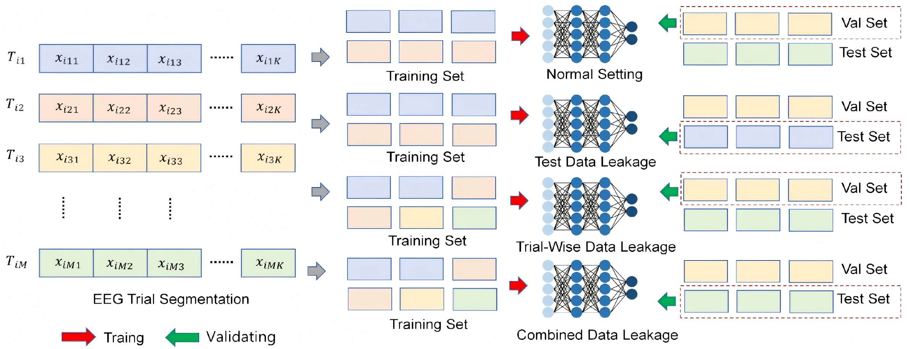

Experimental Results

Performance comparison across different splitting strategies on the DEAP dataset using EEGNet. Segment-leak splitting yields artificially high accuracy, while trial-wise splitting reveals the true model capability.
EEG-based emotion recognition has achieved remarkable performance in recent studies. However, many existing works overlook critical issues in dataset handling that can lead to overly optimistic results. This paper systematically investigates how different types of data leakage — trial-wise leakage and test data leakage — affect EEG-based emotion classification. We design controlled experiments to quantify the impact of each leakage scenario on model performance and demonstrate how improper dataset splitting can mislead conclusions about model effectiveness. Our experiments on the DEAP dataset reveal that segment-level splitting (which causes data leakage) leads to artificially inflated accuracy exceeding 90%, while rigorous trial-wise splitting yields significantly lower but more realistic results around 20–30%. These findings highlight the urgent need for standardized evaluation protocols in EEG-based emotion recognition research.

Figure: Comparison of trial-wise splitting (no leakage) vs. segment-level splitting (with leakage). Segment-level splitting causes data from the same trial to appear in both training and test sets.
Performance comparison across different splitting strategies on the DEAP dataset using EEGNet. Segment-leak splitting yields artificially high accuracy, while trial-wise splitting reveals the true model capability.
@inproceedings{lei2025impact,
title={Impact of Trial-wise and Test Data Leakage on EEG-Based Emotion Classification},
author={Lei, Peihong and Wu, Mengyao and Ying, Wenjun and Mo, Hanlin},
booktitle={Proceedings of the 1st Workshop on 4D Micro-Expression Recognition (4DMR 2025) at IJCAI 2025},
series={CEUR Workshop Proceedings},
volume={4115},
pages={69--77},
year={2025},
publisher={CEUR-WS.org},
url={https://ceur-ws.org/Vol-4115/paper7.pdf}
}